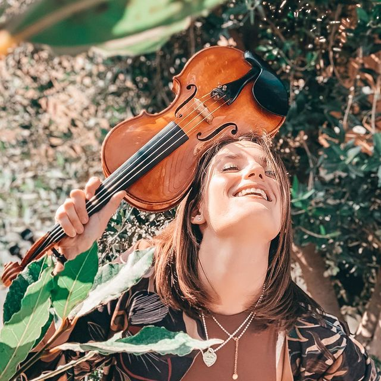
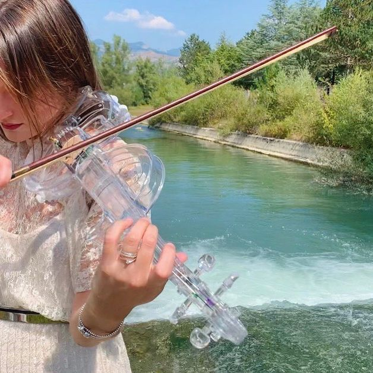

Chi Sono?
Una giovane talentuosa e versatile violinista musicista laureata al conservatorio San Pietro a Majella di Napoli. Le note del suo violino regaleranno momenti emozionanti a voi ed ai vostri ospiti, nel giorno indimenticabile del vostro matrimonio , avvalendovi di un vasto repertorio di brani musicali.

Genere
- Classica
- Pop
- Commerciale
- Altro
Servizi:
- Musica da cerimonia
- Musica per il ricevimento
Formazione
- Duo
- Solista

Perchè scegliermi?
Federica potrà regalarvi emozioni indimenticabili con la sua musica, donando una raffinata atmosfera al vostro matrimonio, dalla cerimonia al ricevimento, al taglio della torta.
Potete proporre brani adatti a voi, alla vostra storia d'amore, oppure anche famose hit.
Il suo violino classico, così come quello magico di cristallo, vi aspettano.
Esperienza di Studi
- Diplomata in Violino presso il Conservatorio di Napoli "S. Pietro a Majella" con votazione 10/10, vecchio ordinamento.
- Dal 2004 al 2006 ha fatto parte del Coro di Voci Bianche del Teatro San Carlo di Napoli partecipando a diverse opere quali la Bohème, Tosca, Otello, Dama di Picche.
- Dal 2005 al 2011, ha frequentato il Corso di Formazione Orchestrale dell'Associazione Collegium Philarmonicum partecipando con la sua orchestra a diverse manifestazioni come Maggio dei Monumenti 2008, inaugurazione e chiusura dell'anno del Giubileo e accompagnando innumerevoli artisti tra cui Peppe Barra, Mariano Rigillo, Lina Sastri, Cloris Brosca, Gianni Lamagna, Tullio de Piscopo.
- Nel 2014 orende parte alla produzione dell'Aida di Scafati del Conservatorio di Musica San Pietro a Majella di Napoli, tenutasi presso il Teatrino di Corte del Palazzo Reale di Napoli.
- Nel 2014 suona con artisti quali Roby Facchinetti, Il Volo e James Senese.
- Dal 2014 al 2017 ha collaborato con la Rotary Youth Chamber Orchestra suonando con innumerevoli artisti di alto spessore quali Fabrizio Von Arx, Cecilia Laca, Luca Signorini, Ermanno Calzolari.
- Con l'Orchestra del Conservatorio di Musica "S. Pietro a Majella" di Napoli ha partecipato nel dicembre 2016 alla Lezione/Concerto del Maestro Riccardo Muti e tenutasi presso il Conservatorio. Nel luglio 2017 ha preso parte alla produzione delle "Nozze di Figaro" presso il Teatro Sannazaro di Napoli e nel luglio 2019 ha collaborato al Concerto Sinfonico Corale di Roberto De Simone.
- Nel 2017 ha frequentato il Corso di Alta Formazione Musicale del M° David Romano e ha partecipato alla Masterclass del M° Tobia Granmo.
Esperienza Lavorativa
- Nel Maggio 2018 ha ricoperto il ruolo di giudice alla prima edizione del Concorso Flegreo per nuove voci "Angeli in Musica".
- Nel Luglio dello stesso anno partecipa al concerto conclusivo della rassegna "Pausilypon: suggestioni all'imbrunire" con l'orchestra acustica del Pausilypon.
- Dal 2018 è con l'Orchestra Ritimo Sinfonica italiana diretta dal M° Diego Basso partecipando, sia in Italia che all'estero, a varie manifestazioni tra cui il concerto in occasione del Centenario della Grande Guerra, Una Voce per Genova, alla tournèe italiana Fly me to the Moon in occasione dei 50 anni dall'allunaggio, il concerto "La mia Terra" andato in scena nel bosco degli artisti di Falcade e ai concerti del CCAS di Marsiglia all'Espace Julien Marseille e le Dome.
- Nel 2018 e nel 2019 ha preso parte, sotto la direzione del M° Diego Basso, alla Produzione di Sanremo Young, programma televisivo in onda su Rai uno diretto da Antonella Clerici, collaborando con artisti di fama internazione come Simon Le Bon e i The Europe, e artisti quali Massimo Ranieri, Ron, Riccardo Cocciante, Gino Paoli, Arisa, Gigliola Cinquetti, Gigi D'Alessio, Anna Tatangelo, Alexia, Povia, Toto Cutugno, i The Kolors, Marco Masini, Iva Zanicchi, Giusy Ferreri.